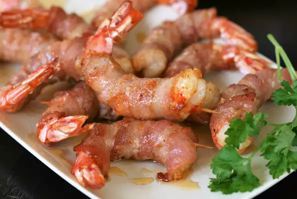

Air-Fried Bacon-Wrapped Shrimp

Simple shrimp recipe to put together with only 4 ingredients, but big on flavor!(Air-Frier needed)
- 16 jumbo Shrimp, fresh, raw, jumbo (11-15)
- ¾ teaspoon Cajun seasoning
- 8 strips thin sliced bacon, cut in half
- 16 toothpicks
- 2 tablespoons hot honey (such as Mike's Hot Honey®)
- Place shrimp on a plate and sprinkle both sides with Cajun seasoning.
Wrap each shrimp with 1 narrow strip of bacon and fasten with a toothpick.
Refrigerate for 25 to 30 minutes.
- Preheat the air fryer to 400 degrees F (200 degrees C).
- Air-fry shrimp for 3 minutes. Flip and continue cooking until bacon is lightly crispy, 4 to 5 minutes more.
You may have to do 2 batches depending on the size of your air fryer.
- Remove shrimp to a plate and drizzle with hot honey.
Serve immediately, being watchful of any toothpicks.